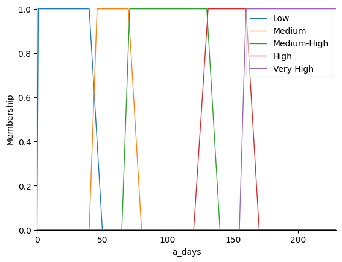
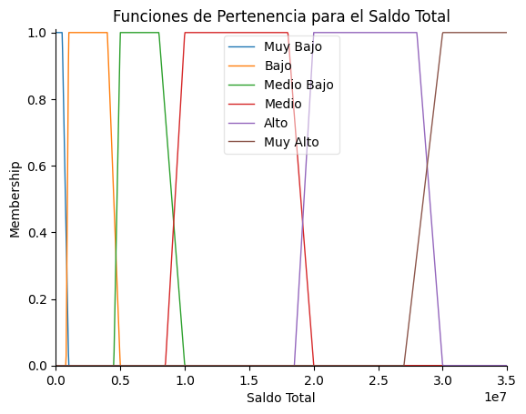

Profiles and Levels#
Profiles#
Profiles |
Risk |
— |
Strategy |
|---|---|---|---|
1. Cliente Riesgo Bajo |
Bajo |
Bajo |
|
2. Cliente Riesgo Leve |
Bajo |
Alto |
|
3. Cliente Riesgo Medio |
Moderado |
Moderado |
|
4. Cliente Riesgo Alto |
Alto |
Bajo |
|
5. Cliente Riesgo Crítico |
Alto |
Alto |
Caso Base Perfil 1: Normalizado y saldo total Bajo
Caso Base Perfil 2: Normalizado y saldo total alto Caso Base Perfil 3: Mantenido y saldo total Medio Caso Base Perfil 4: Caido y saldo total Bajo Caso Base Perfil 5: Caido y saldo total AltoLevels and Linguistic Descriptors#
from IPython.display import display, HTML
import pandas as pd
import numpy as np
import matplotlib.pyplot as plt
import plotly.express as px
import plotly.graph_objects as go
import skfuzzy as fuzz
from skfuzzy import control as ctrl
from sklearn import metrics
import pandas as pd
import plotly.express as px
import seaborn as sns
import numpy as np
import pandas as pd
from sklearn.metrics import confusion_matrix, classification_report
import plotly.graph_objects as go
html_code = """
<table border="1" cellspacing="0" cellpadding="5">
<tr>
<th rowspan="2">Variable</th>
<th rowspan="2">Descriptor Lingüístico</th>
<th colspan="2">Rangos valores</th>
</tr>
<tr>
<th>CDC</th>
<th>TDC</th>
</tr>
<tr>
<td rowspan="3">Riesgo de Impago</td>
<td>Alto</td>
<td>Caído</td>
<td></td>
</tr>
<tr>
<td>Medio</td>
<td>Mantenido</td>
<td></td>
</tr>
<tr>
<td>Bajo</td>
<td>Normalizado</td>
<td></td>
</tr>
<tr>
<td rowspan="5">Días Mora</td>
<td>Muy alto</td>
<td>>160</td>
<td></td>
</tr>
<tr>
<td>Alto</td>
<td>131-160</td>
<td></td>
</tr>
<tr>
<td>Medio-alto</td>
<td>71-130</td>
<td></td>
</tr>
<tr>
<td>Medio</td>
<td>46-70</td>
<td></td>
</tr>
<tr>
<td>Bajo</td>
<td>1-45</td>
<td></td>
</tr>
<tr>
<td rowspan="6">Saldo Total</td>
<td>Muy alto</td>
<td>>30MM</td>
<td>>10</td>
</tr>
<tr>
<td>Alto</td>
<td>20-30MM</td>
<td>7.5-10</td>
</tr>
<tr>
<td>Medio</td>
<td>10-20MM</td>
<td>5-7.5MM</td>
</tr>
<tr>
<td>Medio Bajo</td>
<td>5-10MM</td>
<td>2.5-5MM</td>
</tr>
<tr>
<td>Bajo</td>
<td>Hasta 5MM</td>
<td>1-2.5MM</td>
</tr>
<tr>
<td>Muy bajo</td>
<td><1MM</td>
<td><1MM</td>
</tr>
<tr>
<td rowspan="5">Saldo Vencido</td>
<td>Muy alto</td>
<td>>5MM</td>
<td></td>
</tr>
<tr>
<td>Alto</td>
<td>2MM-5MM</td>
<td></td>
</tr>
<tr>
<td>Medio</td>
<td>900k-2MM</td>
<td></td>
</tr>
<tr>
<td>Medio Bajo</td>
<td>400k-800k</td>
<td></td>
</tr>
<tr>
<td>Bajo</td>
<td><400k</td>
<td></td>
</tr>
<tr>
<td rowspan="5">Cuota Vencida</td>
<td>Muy alto</td>
<td>>1MM</td>
<td></td>
</tr>
<tr>
<td>Alto</td>
<td>500k-1MM</td>
<td></td>
</tr>
<tr>
<td>Medio</td>
<td>200k-500k</td>
<td></td>
</tr>
<tr>
<td>Medio Bajo</td>
<td>100k-200k</td>
<td></td>
</tr>
<tr>
<td>Bajo</td>
<td><100k</td>
<td></td>
</tr>
<tr>
<td rowspan="3">Priorización</td>
<td>Alta</td>
<td>4-5</td>
<td></td>
</tr>
<tr>
<td>Media</td>
<td>2-3</td>
<td></td>
</tr>
<tr>
<td>Baja</td>
<td>1-2</td>
<td></td>
</tr>
<tr>
<td rowspan="3">Hábito de Pago</td>
<td>Bueno</td>
<td>Más de 3 pagos en últimos 6 meses</td>
<td></td>
</tr>
<tr>
<td>Regular</td>
<td>2-3 pagos en últimos 6 meses</td>
<td></td>
</tr>
<tr>
<td>Malo</td>
<td>1 pago en últimos 6 meses</td>
<td></td>
</tr>
<tr>
<td rowspan="3">Total Contactos</td>
<td>Alto</td>
<td>>6</td>
<td></td>
</tr>
<tr>
<td>Medio</td>
<td>3-6</td>
<td></td>
</tr>
<tr>
<td>Bajo</td>
<td><3</td>
<td></td>
</tr>
<tr>
<td rowspan="3">#Total Acuerdos Mes</td>
<td>Alto</td>
<td>0-1</td>
<td></td>
</tr>
<tr>
<td>Medio</td>
<td>2-4</td>
<td></td>
</tr>
<tr>
<td>Bajo</td>
<td>>4</td>
<td></td>
</tr>
</table>
"""
display(HTML(html_code))
| Variable | Descriptor Lingüístico | Rangos valores | |
|---|---|---|---|
| CDC | TDC | ||
| Riesgo de Impago | Alto | Caído | |
| Medio | Mantenido | ||
| Bajo | Normalizado | ||
| Días Mora | Muy alto | >160 | |
| Alto | 131-160 | ||
| Medio-alto | 71-130 | ||
| Medio | 46-70 | ||
| Bajo | 1-45 | ||
| Saldo Total | Muy alto | >30MM | >10 |
| Alto | 20-30MM | 7.5-10 | |
| Medio | 10-20MM | 5-7.5MM | |
| Medio Bajo | 5-10MM | 2.5-5MM | |
| Bajo | Hasta 5MM | 1-2.5MM | |
| Muy bajo | <1MM | <1MM | |
| Saldo Vencido | Muy alto | >5MM | |
| Alto | 2MM-5MM | ||
| Medio | 900k-2MM | ||
| Medio Bajo | 400k-800k | ||
| Bajo | <400k | ||
| Cuota Vencida | Muy alto | >1MM | |
| Alto | 500k-1MM | ||
| Medio | 200k-500k | ||
| Medio Bajo | 100k-200k | ||
| Bajo | <100k | ||
| Priorización | Alta | 4-5 | |
| Media | 2-3 | ||
| Baja | 1-2 | ||
| Hábito de Pago | Bueno | Más de 3 pagos en últimos 6 meses | |
| Regular | 2-3 pagos en últimos 6 meses | ||
| Malo | 1 pago en últimos 6 meses | ||
| Total Contactos | Alto | >6 | |
| Medio | 3-6 | ||
| Bajo | <3 | ||
| #Total Acuerdos Mes | Alto | 0-1 | |
| Medio | 2-4 | ||
| Bajo | >4 | ||
Membership Functions#
Risk Default#
risk = ctrl.Antecedent(np.arange(0.01, 1, 0.001), 'risk')
risk["High"] = fuzz.trapmf(risk.universe, (0.01, 0.01, 0.45, 0.55))
risk["Medium"] = fuzz.trapmf(risk.universe, (0.4, 0.45, 0.75, 0.80))
risk["Low"] = fuzz.trapmf(risk.universe, (0.7, 0.80, 1, 1))
risk.view()#title="Membership Functions - Risk Default"
plt.show()
/home/ssilvera/Escritorio/Proyectos/Modelo_pagos/.venv/lib/python3.12/site-packages/skfuzzy/control/fuzzyvariable.py:125: UserWarning: FigureCanvasAgg is non-interactive, and thus cannot be shown
fig.show()
\[\begin{split}
\mu_{\text{High}}(x) =
\begin{cases}
0, & x < 0.01 \\
1, & 0.01 \leq x \leq 0.45 \\
\frac{0.55 - x}{0.10}, & 0.45 \leq x \leq 0.55 \\
0, & x > 0.55
\end{cases}
\end{split}\]
\[\begin{split}
\mu_{\text{Medium}}(x) =
\begin{cases}
0, & x < 0.4 \\
\frac{x - 0.4}{0.05}, & 0.4 \leq x \leq 0.45 \\
1, & 0.45 \leq x \leq 0.75 \\
\frac{0.80 - x}{0.05}, & 0.75 \leq x \leq 0.80 \\
0, & x > 0.80
\end{cases}
\end{split}\]
\[\begin{split}
\mu_{\text{Low}}(x) =
\begin{cases}
0, & x < 0.7 \\
\frac{x - 0.7}{0.10}, & 0.7 \leq x \leq 0.80 \\
1, & 0.80 \leq x \leq 1 \\
0, & x > 1
\end{cases}
\end{split}\]
Days in arrears#
a_days = ctrl.Antecedent(np.arange(0, 230, 1), 'a_days')
a_days["Low"] = fuzz.trapmf(a_days.universe, [0, 1, 40, 50])
a_days["Medium"] = fuzz.trapmf(a_days.universe, [40, 46, 70, 80])
a_days["Medium-High"] = fuzz.trapmf(a_days.universe, [65, 71, 130, 140])
a_days["High"] = fuzz.trapmf(a_days.universe, [120, 131, 160, 170])
a_days["Very High"] = fuzz.trapmf(a_days.universe, [155, 160, 230, 230])
a_days.view()
plt.show()

\[\begin{split}
\mu_{\text{Low}}(x) =
\begin{cases}
0, & x < 1 \\
1, & 1 \leq x \leq 40 \\
\frac{50 - x}{10}, & 40 \leq x \leq 50 \\
0, & x > 50
\end{cases}
\end{split}\]
\[\begin{split}
\mu_{\text{Medium}}(x) =
\begin{cases}
0, & x < 40 \\
\frac{x - 40}{6}, & 40 \leq x \leq 46 \\
1, & 46 \leq x \leq 70 \\
\frac{80 - x}{10}, & 70 \leq x \leq 80 \\
0, & x > 80
\end{cases}
\end{split}\]
\[\begin{split}
\mu_{\text{Medium-High}}(x) =
\begin{cases}
0, & x < 65 \\
\frac{x - 65}{6}, & 65 \leq x \leq 71 \\
1, & 71 \leq x \leq 130 \\
\frac{140 - x}{10}, & 130 \leq x \leq 140 \\
0, & x > 140
\end{cases}
\end{split}\]
\[\begin{split}
\mu_{\text{High}}(x) =
\begin{cases}
0, & x < 120 \\
\frac{x - 120}{11}, & 120 \leq x \leq 131 \\
1, & 131 \leq x \leq 160 \\
\frac{170 - x}{10}, & 160 \leq x \leq 170 \\
0, & x > 170
\end{cases}
\end{split}\]
\[\begin{split}
\mu_{\text{Very High}}(x) =
\begin{cases}
0, & x < 155 \\
\frac{x - 155}{10}, & 155 \leq x \leq 160 \\
1, & 160 \leq x \leq 230 \\
0, & x > 230
\end{cases}
\end{split}\]
# Definir el universo de discurso (0 a 35M, con 1000 puntos para eficiencia)
saldo_total = ctrl.Antecedent(np.linspace(0, 35_000_000, 1000), "Saldo Total")
# Definir funciones de pertenencia trapezoidales con solapamiento
saldo_total["Muy Bajo"] = fuzz.trapmf(saldo_total.universe, [0, 0, 500_000, 1_000_000])
saldo_total["Bajo"] = fuzz.trapmf(saldo_total.universe, [800_000, 1_000_000, 4_000_000, 5_000_000])
saldo_total["Medio Bajo"] = fuzz.trapmf(saldo_total.universe, [4_500_000, 5_000_000, 8_000_000, 10_000_000])
saldo_total["Medio"] = fuzz.trapmf(saldo_total.universe, [8_500_000, 10_000_000, 18_000_000, 20_000_000])
saldo_total["Alto"] = fuzz.trapmf(saldo_total.universe, [18_500_000, 20_000_000, 28_000_000, 30_000_000])
saldo_total["Muy Alto"] = fuzz.trapmf(saldo_total.universe, [27_000_000, 30_000_000, 35_000_000, 35_000_000])
# Visualizar los conjuntos difusos
saldo_total.view()
plt.title("Funciones de Pertenencia para el Saldo Total")
plt.show()

# Definir el universo de discurso (saldo total en millones, ajustado a 0-300)
saldo_total = np.arange(0, 35000000, 1) # Rango extendido a 300M
# Conjuntos difusos para CDC (0 - 300M)
saldo_cdc = {
"Muy Bajo": fuzz.trapmf(saldo_total, [0, 0.1, 500000, 1000000]),
"Bajo": fuzz.trapmf(saldo_total, [800000, 1000000, 4000000, 5000000]),
"Medio Bajo": fuzz.trapmf(saldo_total, [4500000, 5000000, 8000000, 10000000]),
"Medio": fuzz.trapmf(saldo_total, [8500000, 10000000, 18000000, 20000000]),
"Alto": fuzz.trapmf(saldo_total, [18500000, 20000000, 28000000, 30000000]),
"Muy Alto": fuzz.trapmf(saldo_total, [27000000, 30000000, 35000000, 35000000])
}
# # Conjuntos difusos para TDC (0 - 300M)
# saldo_tdc = {
# "Muy Bajo": fuzz.trapmf(saldo_total, [0, 0, 1, 2]),
# "Bajo": fuzz.trapmf(saldo_total, [1, 2, 10, 25]),
# "Medio Bajo": fuzz.trapmf(saldo_total, [10, 25, 40, 60]),
# "Medio": fuzz.trapmf(saldo_total, [40, 60, 90, 110]),
# "Alto": fuzz.trapmf(saldo_total, [90, 110, 150, 200]),
# "Muy Alto": fuzz.trapmf(saldo_total, [150, 200, 300, 300])
# }
# Graficar los conjuntos difusos para validar solapamiento
plt.figure(figsize=(12, 6))
for label, mf in saldo_cdc.items():
plt.plot(saldo_total, mf, label=f"CDC - {label}")
# for label, mf in saldo_tdc.items():
# plt.plot(saldo_total, mf, linestyle="dashed", label=f"TDC - {label}")
plt.title("Funciones de pertenencia difusas (CDC y TDC) con ceros definidos")
plt.xlabel("Saldo Total (Millones)")
plt.ylabel("Grado de Pertenencia")
plt.legend()
plt.grid()
plt.show()
---------------------------------------------------------------------------
KeyboardInterrupt Traceback (most recent call last)
Cell In[5], line 38
36 plt.legend()
37 plt.grid()
---> 38 plt.show()
File ~/Escritorio/Proyectos/Modelo_pagos/.venv/lib/python3.12/site-packages/matplotlib/pyplot.py:614, in show(*args, **kwargs)
570 """
571 Display all open figures.
572
(...)
611 explicitly there.
612 """
613 _warn_if_gui_out_of_main_thread()
--> 614 return _get_backend_mod().show(*args, **kwargs)
File ~/Escritorio/Proyectos/Modelo_pagos/.venv/lib/python3.12/site-packages/matplotlib_inline/backend_inline.py:90, in show(close, block)
88 try:
89 for figure_manager in Gcf.get_all_fig_managers():
---> 90 display(
91 figure_manager.canvas.figure,
92 metadata=_fetch_figure_metadata(figure_manager.canvas.figure)
93 )
94 finally:
95 show._to_draw = []
File ~/Escritorio/Proyectos/Modelo_pagos/.venv/lib/python3.12/site-packages/IPython/core/display_functions.py:298, in display(include, exclude, metadata, transient, display_id, raw, clear, *objs, **kwargs)
296 publish_display_data(data=obj, metadata=metadata, **kwargs)
297 else:
--> 298 format_dict, md_dict = format(obj, include=include, exclude=exclude)
299 if not format_dict:
300 # nothing to display (e.g. _ipython_display_ took over)
301 continue
File ~/Escritorio/Proyectos/Modelo_pagos/.venv/lib/python3.12/site-packages/IPython/core/formatters.py:238, in DisplayFormatter.format(self, obj, include, exclude)
236 md = None
237 try:
--> 238 data = formatter(obj)
239 except:
240 # FIXME: log the exception
241 raise
File ~/Escritorio/Proyectos/Modelo_pagos/.venv/lib/python3.12/site-packages/decorator.py:232, in decorate.<locals>.fun(*args, **kw)
230 if not kwsyntax:
231 args, kw = fix(args, kw, sig)
--> 232 return caller(func, *(extras + args), **kw)
File ~/Escritorio/Proyectos/Modelo_pagos/.venv/lib/python3.12/site-packages/IPython/core/formatters.py:282, in catch_format_error(method, self, *args, **kwargs)
280 """show traceback on failed format call"""
281 try:
--> 282 r = method(self, *args, **kwargs)
283 except NotImplementedError:
284 # don't warn on NotImplementedErrors
285 return self._check_return(None, args[0])
File ~/Escritorio/Proyectos/Modelo_pagos/.venv/lib/python3.12/site-packages/IPython/core/formatters.py:402, in BaseFormatter.__call__(self, obj)
400 pass
401 else:
--> 402 return printer(obj)
403 # Finally look for special method names
404 method = get_real_method(obj, self.print_method)
File ~/Escritorio/Proyectos/Modelo_pagos/.venv/lib/python3.12/site-packages/IPython/core/pylabtools.py:170, in print_figure(fig, fmt, bbox_inches, base64, **kwargs)
167 from matplotlib.backend_bases import FigureCanvasBase
168 FigureCanvasBase(fig)
--> 170 fig.canvas.print_figure(bytes_io, **kw)
171 data = bytes_io.getvalue()
172 if fmt == 'svg':
File ~/Escritorio/Proyectos/Modelo_pagos/.venv/lib/python3.12/site-packages/matplotlib/backend_bases.py:2155, in FigureCanvasBase.print_figure(self, filename, dpi, facecolor, edgecolor, orientation, format, bbox_inches, pad_inches, bbox_extra_artists, backend, **kwargs)
2152 # we do this instead of `self.figure.draw_without_rendering`
2153 # so that we can inject the orientation
2154 with getattr(renderer, "_draw_disabled", nullcontext)():
-> 2155 self.figure.draw(renderer)
2156 if bbox_inches:
2157 if bbox_inches == "tight":
File ~/Escritorio/Proyectos/Modelo_pagos/.venv/lib/python3.12/site-packages/matplotlib/artist.py:94, in _finalize_rasterization.<locals>.draw_wrapper(artist, renderer, *args, **kwargs)
92 @wraps(draw)
93 def draw_wrapper(artist, renderer, *args, **kwargs):
---> 94 result = draw(artist, renderer, *args, **kwargs)
95 if renderer._rasterizing:
96 renderer.stop_rasterizing()
File ~/Escritorio/Proyectos/Modelo_pagos/.venv/lib/python3.12/site-packages/matplotlib/artist.py:71, in allow_rasterization.<locals>.draw_wrapper(artist, renderer)
68 if artist.get_agg_filter() is not None:
69 renderer.start_filter()
---> 71 return draw(artist, renderer)
72 finally:
73 if artist.get_agg_filter() is not None:
File ~/Escritorio/Proyectos/Modelo_pagos/.venv/lib/python3.12/site-packages/matplotlib/figure.py:3257, in Figure.draw(self, renderer)
3254 # ValueError can occur when resizing a window.
3256 self.patch.draw(renderer)
-> 3257 mimage._draw_list_compositing_images(
3258 renderer, self, artists, self.suppressComposite)
3260 renderer.close_group('figure')
3261 finally:
File ~/Escritorio/Proyectos/Modelo_pagos/.venv/lib/python3.12/site-packages/matplotlib/image.py:134, in _draw_list_compositing_images(renderer, parent, artists, suppress_composite)
132 if not_composite or not has_images:
133 for a in artists:
--> 134 a.draw(renderer)
135 else:
136 # Composite any adjacent images together
137 image_group = []
File ~/Escritorio/Proyectos/Modelo_pagos/.venv/lib/python3.12/site-packages/matplotlib/artist.py:71, in allow_rasterization.<locals>.draw_wrapper(artist, renderer)
68 if artist.get_agg_filter() is not None:
69 renderer.start_filter()
---> 71 return draw(artist, renderer)
72 finally:
73 if artist.get_agg_filter() is not None:
File ~/Escritorio/Proyectos/Modelo_pagos/.venv/lib/python3.12/site-packages/matplotlib/axes/_base.py:3181, in _AxesBase.draw(self, renderer)
3178 if artists_rasterized:
3179 _draw_rasterized(self.get_figure(root=True), artists_rasterized, renderer)
-> 3181 mimage._draw_list_compositing_images(
3182 renderer, self, artists, self.get_figure(root=True).suppressComposite)
3184 renderer.close_group('axes')
3185 self.stale = False
File ~/Escritorio/Proyectos/Modelo_pagos/.venv/lib/python3.12/site-packages/matplotlib/image.py:134, in _draw_list_compositing_images(renderer, parent, artists, suppress_composite)
132 if not_composite or not has_images:
133 for a in artists:
--> 134 a.draw(renderer)
135 else:
136 # Composite any adjacent images together
137 image_group = []
File ~/Escritorio/Proyectos/Modelo_pagos/.venv/lib/python3.12/site-packages/matplotlib/artist.py:71, in allow_rasterization.<locals>.draw_wrapper(artist, renderer)
68 if artist.get_agg_filter() is not None:
69 renderer.start_filter()
---> 71 return draw(artist, renderer)
72 finally:
73 if artist.get_agg_filter() is not None:
File ~/Escritorio/Proyectos/Modelo_pagos/.venv/lib/python3.12/site-packages/matplotlib/legend.py:752, in Legend.draw(self, renderer)
748 self._legend_box.set_width(self.get_bbox_to_anchor().width - pad)
750 # update the location and size of the legend. This needs to
751 # be done in any case to clip the figure right.
--> 752 bbox = self._legend_box.get_window_extent(renderer)
753 self.legendPatch.set_bounds(bbox.bounds)
754 self.legendPatch.set_mutation_scale(fontsize)
File ~/Escritorio/Proyectos/Modelo_pagos/.venv/lib/python3.12/site-packages/matplotlib/offsetbox.py:369, in OffsetBox.get_window_extent(self, renderer)
367 bbox = self.get_bbox(renderer)
368 try: # Some subclasses redefine get_offset to take no args.
--> 369 px, py = self.get_offset(bbox, renderer)
370 except TypeError:
371 px, py = self.get_offset()
File ~/Escritorio/Proyectos/Modelo_pagos/.venv/lib/python3.12/site-packages/matplotlib/offsetbox.py:60, in _compat_get_offset.<locals>.get_offset(self, *args, **kwargs)
56 params = _api.select_matching_signature(sigs, self, *args, **kwargs)
57 bbox = (params["bbox"] if "bbox" in params else
58 Bbox.from_bounds(-params["xdescent"], -params["ydescent"],
59 params["width"], params["height"]))
---> 60 return meth(params["self"], bbox, params["renderer"])
File ~/Escritorio/Proyectos/Modelo_pagos/.venv/lib/python3.12/site-packages/matplotlib/offsetbox.py:306, in OffsetBox.get_offset(self, bbox, renderer)
291 @_compat_get_offset
292 def get_offset(self, bbox, renderer):
293 """
294 Return the offset as a tuple (x, y).
295
(...)
303 renderer : `.RendererBase` subclass
304 """
305 return (
--> 306 self._offset(bbox.width, bbox.height, -bbox.x0, -bbox.y0, renderer)
307 if callable(self._offset)
308 else self._offset)
File ~/Escritorio/Proyectos/Modelo_pagos/.venv/lib/python3.12/site-packages/matplotlib/legend.py:721, in Legend._findoffset(self, width, height, xdescent, ydescent, renderer)
718 """Helper function to locate the legend."""
720 if self._loc == 0: # "best".
--> 721 x, y = self._find_best_position(width, height, renderer)
722 elif self._loc in Legend.codes.values(): # Fixed location.
723 bbox = Bbox.from_bounds(0, 0, width, height)
File ~/Escritorio/Proyectos/Modelo_pagos/.venv/lib/python3.12/site-packages/matplotlib/legend.py:1165, in Legend._find_best_position(self, width, height, renderer)
1162 legendBox = Bbox.from_bounds(l, b, width, height)
1163 # XXX TODO: If markers are present, it would be good to take them
1164 # into account when checking vertex overlaps in the next line.
-> 1165 badness = (sum(legendBox.count_contains(line.vertices)
1166 for line in lines)
1167 + legendBox.count_contains(offsets)
1168 + legendBox.count_overlaps(bboxes)
1169 + sum(line.intersects_bbox(legendBox, filled=False)
1170 for line in lines))
1171 # Include the index to favor lower codes in case of a tie.
1172 candidates.append((badness, idx, (l, b)))
File ~/Escritorio/Proyectos/Modelo_pagos/.venv/lib/python3.12/site-packages/matplotlib/legend.py:1165, in <genexpr>(.0)
1162 legendBox = Bbox.from_bounds(l, b, width, height)
1163 # XXX TODO: If markers are present, it would be good to take them
1164 # into account when checking vertex overlaps in the next line.
-> 1165 badness = (sum(legendBox.count_contains(line.vertices)
1166 for line in lines)
1167 + legendBox.count_contains(offsets)
1168 + legendBox.count_overlaps(bboxes)
1169 + sum(line.intersects_bbox(legendBox, filled=False)
1170 for line in lines))
1171 # Include the index to favor lower codes in case of a tie.
1172 candidates.append((badness, idx, (l, b)))
File ~/Escritorio/Proyectos/Modelo_pagos/.venv/lib/python3.12/site-packages/matplotlib/transforms.py:574, in BboxBase.count_contains(self, vertices)
571 vertices = np.asarray(vertices)
572 with np.errstate(invalid='ignore'):
573 return (((self.min < vertices) &
--> 574 (vertices < self.max)).all(axis=1).sum())
File ~/Escritorio/Proyectos/Modelo_pagos/.venv/lib/python3.12/site-packages/numpy/_core/_methods.py:67, in _all(a, axis, dtype, out, keepdims, where)
64 return umr_any(a, axis, dtype, out, keepdims)
65 return umr_any(a, axis, dtype, out, keepdims, where=where)
---> 67 def _all(a, axis=None, dtype=None, out=None, keepdims=False, *, where=True):
68 # By default, return a boolean for any and all
69 if dtype is None:
70 dtype = bool_dt
KeyboardInterrupt: